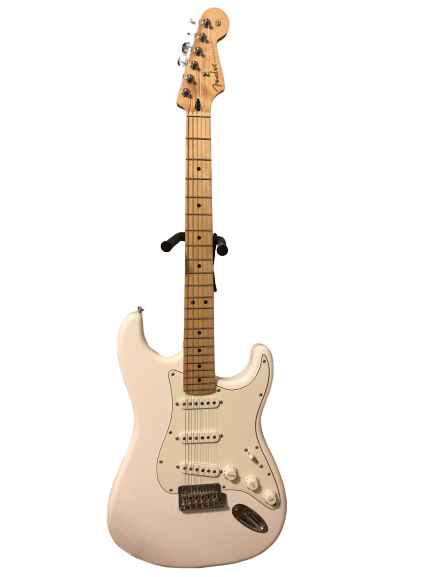

A Year of Learning Guitar
In December 2018, I was at my parents house for the holidays. My dad has a bunch of guitars lying around, so I picked one up and started practicing. I had tried to learn several times in the past, so I knew a few of the basics, but I could never stick with it. But this time I tried to focus on enjoying the training- seeing if I could get my fingers to gain strength and accuracy. I felt committed enough that I decided to journal my progress. Here are my notes, along with some clarifications.
January
Basic chord shapes. Tried to learn how to do barre chords.
It was very challenging to use my finger as a bar, but progress came relatively quickly (although painfully) which helped motivate me. I’m still not that great at them, but it was nice feeling like I made progress on an advanced skill early on.
Basic major scale stuff. Tried to memorize patterns. It was boring. Found out about intervals and how they appear as shapes on the fretboard, and thus how you can see how the scale is constructed instead of memorizing. Game changer.
I had very little background in music theory, so seeing the logic of it come through on the guitar was amazing to me. It finally felt accessible. During January and Febuary, I watched tons and tons of youtube videos on music theory in general and how it related to the guitar.
One thing I wanted to understand early on: how do expert guitarists and musicians operate? Even if I won’t get there myself for quite some time, I wanted to know what I was moving towards, and strumming the same chords over and over again definitely wasn’t it.
I sent this message to my brother:
“Ok guitar is really starting to click for me. It’s very exciting. Last weekend I started hearing about scales and wanted to learn; so I watched some vids and they told me to memorize these major scale patterns (7 of them). So over the week I started memorizing but it was kind of tedious so I got bored and tried to think about just being able to conjure up the patterns by thinking about the steps through the major scale. And that was easier to think about than memorizing so I tried that for a while. And then the stuff I was reading mentioned the minor pentatonic as a popular scale so I tried to learn that. But obviously the step sizes were different, so I thought I should stop thinking about steps and start thinking about the actual intervals from the root note. And then I figured out that if I can visualize all of the intervals relative to some root, then it’s easy to walk the scale as long as I know which intervals are in the scale. So I got better at knowing their locations, and then I tried a minor scale which wasn’t so bad; just a few differences than major, and then I strummed an e minor chord and then in rhythm tried to play a note or two from the scale, which sounded solid, and then tried to string a few more notes together from the scale, and then aha! It sounds approximately like someone playing guitar!”
Started doing ear training to learn to recognize intervals by sound.
I used the fantastic and free Functional Ear Trainer app. I ended up doing it pretty consistently for a few months and I got a good basic foundation in note recognition.
I also learned that there’s really three different kinds of ear training:
First, you could try learning pitches of notes in some absolute sense (i.e, this note sounds like a C#). But this is actually very hard or impossible to learn as an adult, and not that useful anyway.
Secondly, you can learn intervals between notes (i.e., these two notes sound like they differ by a major second). This is more useful and definitely doable.
Thirdly, you can learn intervals relative to some root, by first getting a sense of the key you’re in (i.e., this sounds like a perfect fifth relative to the root of the key I’m in). This is the easiest method to learn and probably also the most useful, because it allows you to transcribe whole melodies and pick out chords, once you’re properly oriented in the key.
Bought a guitar.
I got a lightly used 2017 White Mexican Strat. :) I told myself that if I was able to keep up regular practice for a month, I would go for it. And I did!

February
Started using a pick
I was initially a bit overwhelmed by all the different pick types and sizes available, but once I picked one and stuck with it I got comfortable fairly quickly.
Tried to mix up picking and open chord playing
Didn’t have much initial success with this
Small victory- when I make a G major chord my pinky is now happy enough curling insteading of wanting to flatten out
Starting to pick out simple melodies by ear
I was able to do this from a combination of ear training and learning a major scale, and a good amount of practice.
Lots of music theory learning. Learned about chords diatonic to the major scale and scale degrees.
This blew my mind once I understood it. The chords commonly used with a certain key are made up of the notes in the key! They aren’t randomly picked- they come from the same limited palette of notes that the melody comes from, and the chords are just each subsequent combination of ‘note, skip, note, skip, note’ from the scale- i.e. each 1st, 3rd, and 5th. Sometimes the 3rd happens to be major, and sometimes minor, which changes the nature of the chord.
It’s so simple and obvious sounding, but I didn’t realize it. I think learning music theory is very much like this- everything is ‘obvious’ eventually, but it can be overwhelming when starting out. I imagine even that different people get stuck on different topics. The best teacher, then, treats each topic as if it might be the tricky one. The best videos I’ve seen explain things with this kind of patience.
Started learning the names of the notes on the fretboard. This forced me to understand the shapes better in order to make memorizing easier. I also used a phone game called Fretboard Hero to learn the fretboard during my train commute.
I wasn’t able to completely memorize all the notes, but I learned enough that I can work them out pretty quickly when necessary. I’d like to eventually memorize them more thoroughly.
March
Tried to learn the solo from Animal Midnight (Stephen Malkmus and the Jicks). Learned about bending notes. Watched a video and tried it and it was easier than I expected, but didn’t get very good at it.
Nice and slow solo for a beginner.
Learned a little about sliding notes in Doll (Foo Fighters)
Also a good beginner melody.
Started learning about arpeggio shapes and would work them to memory by jamming them along with a loop from Doll or 15 Step (Radiohead) using the Amazing Slow Downer app. Got into a routine of- play song on slow loop, try to arpeggiate in the chord, and then after getting tired try to just feel it and play blindly along with the song
This is a really nice app for slowing down and looping parts of songs. Plus it can connect to Spotify so it’s super easy to pick out a song.
Silly milestone but- finally visualized the 2nd major scale pattern overlapping with the first.
Ear training for minor scale and two note major scale harmonies (i.e two notes at once).
I was probably still making progress in ear training at this point, but it was way harder than at the beginning.
Did some 1 string training. Tried playing w mixolydian mode.
I didn’t mention learning about modes, but I remember being surprised at how simple the idea was, albeit buried behind some dense terminology. The different modes of a scale are just the various scales you get by considering each note of the original scale as the root. That’s all! So Mixolydian is the mode you get by starting on the 5th degree of the scale.
Oh! The 4th and 5th are perfect! They are basically always in the scale! I can use them for orientation! And then there’s some kind of 2nd 3rd and 6th and 7th but usually not two kinds. That makes it much easier to get around on one string in weird scales- they will be my guide posts. Also the 5th sounds very stable- like the octave but not so high. And the 4th is stable but wants to go back home.
April
Got The Advancing Guitarist book. Started practicing single string playing; jamming along with modal backing tracks. It’s nice staying in the same set of notes for all modes (eg natural notes) bc the repetition helps learn the fretboard. Hands started hurting recently so learned how to warm up.
My hand pain actually got pretty bad for a few months. Not sure why. And then it went away on it’s own.
Had my first in-person lesson. She suggested I learn some songs to help me put things in a musical context. But for some reason the way I do things feels right for now (i.e. learning melodies and riffs and things and just exploring instead of trying to learn a piece). She gave me some picking exercises and some fretting exercises.
I enjoyed the excercises, but it was hard to express to my teacher the sorts of things I wanted to learn. And sometimes I didn’t know.
Fretboard knowledge definitely feeling higher these days… able to jam a bit to Alice in Chains: Unplugged and move around a bit cuz I know the shapes well and it’s pretty easy to find the key with my ear.
Great album.
2nd lesson- was having trouble with A shape bar chord- she said it’s not super important to not fret the 1st string with the ring finger since the sound can get lost in the tone anyway. Basically it’s nbd. Gave me an exercise to find triads on different sets of 3 strings.
Decided I should learn a key really well (e.g G major) which will allow me to confidently do hanons across the whole neck in that key. Whereas typically I have to think a lot and get lost after a while. I’ll start with low 2 strings and move on from there. knowing circle of 5ths will help me apply memorization of G to C and D, and I can branch out from there, etc. and simultaneously I will be memorizing modes, bc each mode is just some major with a different root, eg 5th of a major is mixolydian of that 5th. Took a picture of my guitar so I could study it on the train. Would be nice to have this gamified but a picture is probably good enough.
So hanons are these hardcore exercises for drilling scales into your brain. It’s an adaptation of exercises designed originally for Piano. Even though this whole idea turned out to be a bit optimistic for my level at the time, I still like it and hope to get back to it. I did end up focusing on the key of G and I think it has served me well, since many open chords fit it.
Also have been using Chet app for ear training, which is less ‘functional’ but it’s teaching me to recognize the sound of intervals.
This thing is pretty fun! It’s maybe less useful than the other one, but it’s very slick and game-y.
Getting more comfortable with barre chords; pretty comfortable finding the chord I want based on the 6th and 5th strings and choosing a major or minor shape.
Started practicing some walking bass chords and mixing in some finger style riffs between chords
May
Hand was hurting so slowed down on practicing
Working through the Guitar for Idiots book
I got this from the library. It’s actually pretty good! It helped me do some chord practice that wasn’t so focused on scales.
Learned some blues style swing w/ double stops
Learned some ‘boom chuck’ riffs
Both of these are from the book.
June
Some more fret hand exercises
Some arpeggios (like 1-5-9) for Message in a Bottle (per recommendation of my teacher)
Still not practicing a whole lot
July
Getting back into it for real
Started learning to read music
Hooked up guitar to sight reading app, which teaches me to read and to know the names of notes on the fretboard. Focusing on the middle octave
The app is called NotesTeacher. It’s pretty good. It’s not meant for guitar but you can hook it up and play by the sound of the instrument. I ended up learning the Treble clef pretty well with this app, but mostly just tapping on the train rather than playing.
Still more fretting exercises, some simple major scales
Harmonizing the major scale in thirds, and also playing 5ths and triads through the scale
Good amount of learning to read sheet music
Finding random notes on every string
Basically- trying to test myself by hunting down a particular note on each of the 6 strings
Playing C major up and down the fretboard (I remember trying this months ago and it seemed impossible… pretty easy now!)
Trying to play some bach preludes by sight reading (slow going but I love how it makes me find each note)
Some jamming with friends
I noticed I started looking at the side of the fretboard sometimes instead of the face of it which is huge
My form holding the guitar was pretty bad before, so it was good to be able to tilt it away a bit. I’m still not good at this though.
More bach prelude. Getting a little faster
Some different scales exercises- more intervals within the scale rather than just playing it straight
Some more blues stuff from idiots guide to guitar
When trying to produce a simple melody by ear, I’ve noticed my guessing accuracy has gone up. Like I can instinctively reach for octaves, 3rds, 5ths, and sometimes even 6ths and 4ths and others. Sometimes I’ll get a whole line right on the first try. Feels like for the first time I can just play what’s in my head (for simple major melodies of course!)
This felt really good. Like a step toward playing the instrument rather than just doing tricks.
Made up a drill- walk through the fretboard jumping by 5ths, trying to both know the name of the note I’m jumping to and it’s location(s) rather than just using interval shapes. And I do it in the dark so I can’t see the frets that well. I’m slow right now, but if I can eventually do full triads and 7th arpeggios like this I should have really good command of the fretboard.
Didn’t stick with it. Cool idea though. :)
Around this time I stopped going to lessons. I think I did get some things out of them, but it also didn’t seem to sync up all that well with what I wanted to learn. But it’s hard to say exactly why. It’s possible I just needed this year to explore, and that lessons would work better once I had a clearer idea of how I wanted to improve.
August
I read that associating the sounds with solfege could be more effective than just saying/singing numbers.Ear training- working on naming multiple consecutive functional notes in solfege.
Continuing to learn to read sheet music with the app.
Basically, if I read a C, I want to know both in absolute terms where to find it on the fretboard, as well as how it functions in the key.Started on the Hal Leonard Guitar Method book, which emphasizes playing melodies by reading sheet music. It’s interesting and difficult to work with open strings, since I’m used to playing in the middle of the fretboard. And also playing specific notes instead of thinking in relative terms. I guess I should learn to merge the two and pick specific notes but also understand their function in the scale and use my built up scale knowledge to find them quickly.
Definitely getting better at multiple note solfege. Can pretty reliably get 2 notes in a row at 70 bpm (major scale only); increasing speed before trying to add more notes, which is much harder.
September
Getting very quick at playing through the major scale in thirds (at least with one major scale pattern). Trying to apply it to the first position C major scale as well.
Started on the William Leavitt method book, which, similar to the other one, is a lot of sight reading and first position stuff. Sight reading is definitely improving. Also played around with some fill notes between simple chord changes and it feels more natural (which makes sense given the time I’m spending in first position). Not easy yet though!
October
This book is dang hard. I lost momentum pretty quickly, but I’d like to get back to it.The Leavitt book is hard (I’m still on the first few pages) but I’ve made a little progress. The exercises are getting a little more fluid, but not by much.
Getting easier and easier to reproduce melodies without too much trial and error. (For example, I was able to play Oh Susanna first try just be hearing the melody in my head and knowing how it mapped to the fretboard.) Also tried to sing along with the notes I played and it seemed to help me connect to them a little bit.
Have kept up with the note reading app. Improvement is slow but steady.
Have started trying to learn key signatures. It’s been easier than expected, b/c it’s not just pure memorization. While I’m walking somewhere I’ll think through the different major keys- like C is CDEFGAB, and the 5th is G so that’s the next key i’ll do, so G has one sharp, and it’s on the 7th, so it’s GABCDEF# (and I’ll think through all the whole and half steps to confirm), and the 5th is D and I’ll add a sharp on the 7th, so it’s DEF#GABC#, and the process continues around the circle of fifths. Or I can go around the other way, the circle of fourths, and add flats on the 4th. Just it’s just a bit of visualization.
As I spend more time in C major in first position, I’m starting to learn connections with the primary major scale shape I learned, which has the first and second on one string, and then 3 4 5 on the next, and then 6 7 8. I’m very comfortable in that pattern, so it’s been frustrating to look at a scale differently, but now it’s exciting to feel them connect. For instance, I’m getting comfortable at seeing two different places where I can find a major 2nd. Eventually, I assume, all the different intervals will feel equally accessible. I remember the advice I got early on was to learn the major scale in all possible positions, but I’m kind of glad I got very comfortable in one before moving on. It helps me chart out the progress I can make in each one.
On this note (haha) it is a bit frustrating to have to do something outside my comfort zone and learn a new way of playing. Like when I started guitar- everything was new and frustrating so if I wanted to play guitar I knew it would be difficult- it was an easier pill to swallow. But now that I have some comfort playing melodies in a particular major scale position, it’s hard to abandon that and learn a different position. I think everyone faces this- when they have a good way of doing things, but in order to progress they need to do something in a new way or put themselves in a place where they can’t rely on that. If they cease to think of themselves as beginners, they’re in danger of losing the ability to learn. In my experience all skills are like this. But this is the first time for me with guitar. In a way it’s a measure of the progress I’ve made, that I have built up some comfort with my technique so far, but it’s also a test- do I have the courage to be bad again and keep improving? Can I keep the beginner’s mindset?
Playing with more open strings has made me realize- I am terrible at muting strings.
Initially, practicing the basic open chords felt boring to me. Like, more of a party trick than playing music. And I knew that if that’s all I practiced, I would lose motivation. By this point, I knew enough context to see how to make music with them, and so I was motivated to work on them.Doing a lot more strumming and chords recently. It feels like the right time for it. I feel limited by not knowing this simple stuff, but I also feel like I know enough to understand what I’m playing. And I can do some fills and melodies to connect chords to keep them interesting. Or at least that’s what I try to do. It’s pretty basic stuff right now.
November
Recently I’ve been taking a more relaxed route- learning a few riffs from songs (Stars and Sons by Broken Social Scene) or making my own. I’m probably not making as quick progress, but it’s a nice break, and I feel like my overall comfort level is increasing
At this point it felt right to focus less on exercises and more on getting comfortable with the instrument and playing music.
I think initially, I felt like I was so technically limited that nothing I played sounded good, so I wasn’t motivated to try actual music.
But eventually, I had a lot of disjointed skills and techniques, but not much idea of how to apply them.
December
The past few months I’ve been doing pretty simple stuff. Lots of strumming open chords- like transitions between C and G, which have been tough for me. But I’m finally starting to see that practice pay off. I’m also overall getting pretty comfortable playing riffs in the key of G, so these two things are easy to combine together and make some guitar sounds that seem more advanced to me, like chord changes with fills. For the first time today, moving to the G chord shape has felt not entirely awkward, and my pinky especially is more cooperative.
I’m starting to see the payoff from my work on chords. My fingers feel a lot more limber. I can make farther stretches and find the strings quicker- even for new shapes. It feels a lot less mentally taxing- like I can finally trust my fingers to do the right thing without having to babysit them.
End of Year
Reflecting a bit- I think the learning approach I’ve taken has been to get a broad introduction to lots of different areas of guitar study, and finally settling on a particular area to go deeper in. Over the course of the year, I looked at music theory, basic chords, scales, learning the names of the notes on the fretboard, interval shapes, triad shapes, picking skills, slides and bends, hammers ons and offs, and reading music. And I didn’t go very deep in any of it, but it gave me a good foundation. It’s nice to know it’s all out there in the future.
But toward the end of the year I started focusing on getting comfortable with fingerstyle playing in the key of G major. I’m getting comfortable with the chords that commonly pop up, and it’s getting easier to find the usual G-major notes that are under my fingers in the open position of the fretboard.
If I didn’t have the broad base, I might get too comfortable and eventually get stuck- not knowing what else is out there. But if I didn’t find an area to focus on, I might give up from never feeling confident in anything. But instead I can use this G major open position stuff to spring to other keys and styles later- since I already understand how it will apply.
I do have some regret looking back at all the exercises and techniques I worked on in earnest but didn’t keep up with. I think I just wasn’t ready for them, but it’s nice knowing they are there for me in the future.